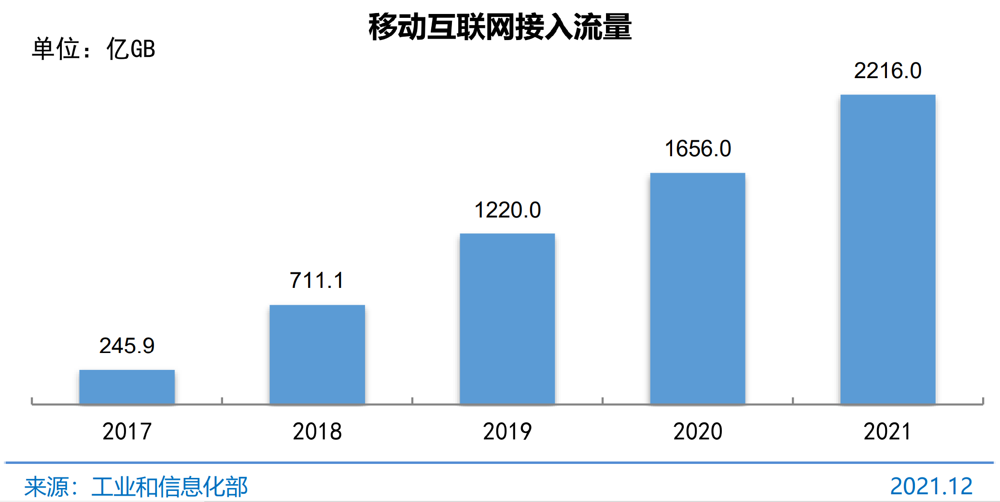
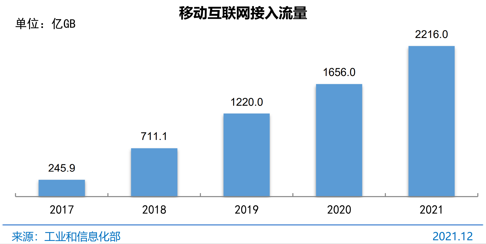
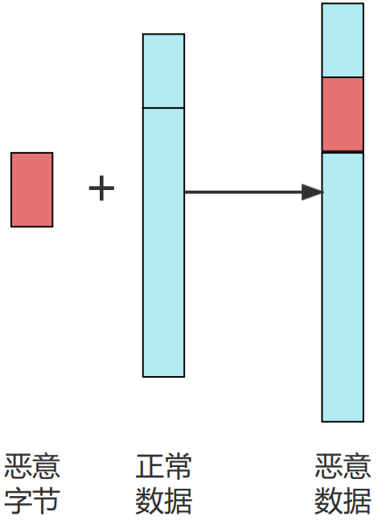
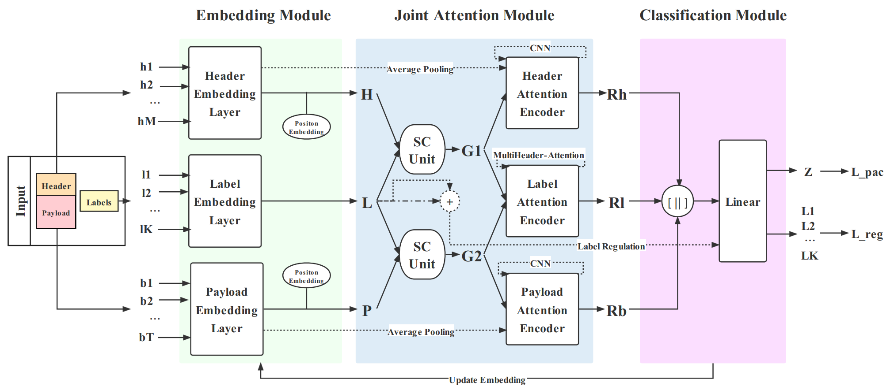
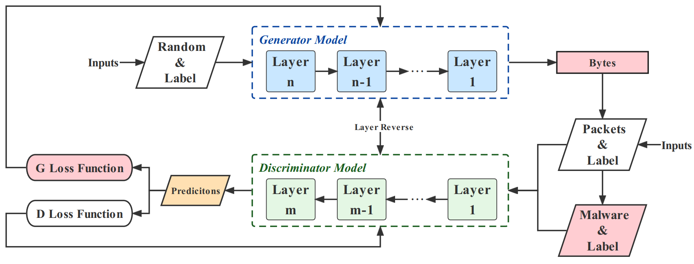
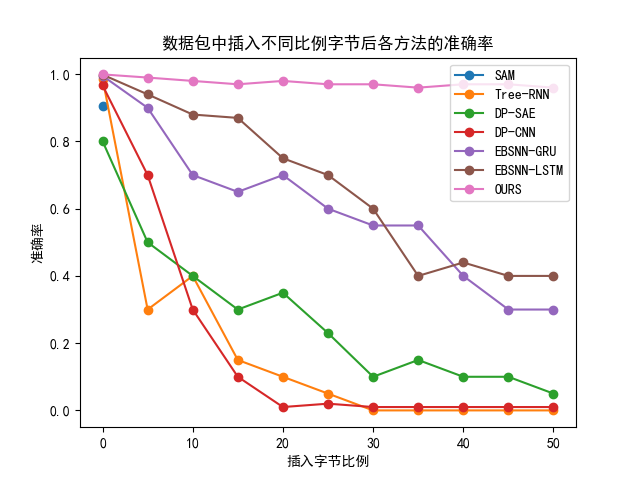

毕业设计中期答辩
基于深度神经网络的高鲁棒性网络流量分类算法设计与实现
王硕
2022年4月16日
Any element with the class="notes" will not be displayed. This can
be used for speaker notes. In fact, the impressConsole plugin will
show it in the speaker console!
Traffic
Classification
 

背景介绍
网络流量分类即将流量数据分成特定的类别
- 包级、流级
- 明文、密文
- 应用、网站、协议、行为等
意义
- 网络测量与管理
- 网络服务质量
- 异常检测
- ...
技术分类
- 基于端口号等的模式匹配方法 > 方法简单，端口号随机技术使此方法不能准确分类，不能对类似应用等进行分类
- 基于数据特征的机器学习方法 > 特征挖掘耗时繁多，数据包的特征易被攻击者恶意操作，且容易受到网络环境波动的影响
- 基于字节序列的深度学习方法 > 数据噪声、对抗攻击使得模型鲁棒性降低、全球网络流量的激增对模型的处理时间有了更高要求
针对数据包的攻击方式(神经网络)
针对神经网络的攻击一般通过插入噪声改变分类模型的结果 由于包头字段特征的修改容易改变数据包的类型，且难以训练， 所以一般采用在payload字段插入一些字节的方式。这些字节经 过训练可以大幅降低神经网络的性能。 毕业设计目标
基于深度神经网络，设计一种高鲁棒性的深度神经网络模型算法，来对现在复杂环境下的网络流量进行分类。- 多类型数据集收集与处理
- 分类算法的设计与实现
- 利用实验验证模型的鲁棒性及效率
- 模型的解释及可视化
- ...
数据处理
00000000 ca fe ba be 00 00 00 33 00 15 0a 00 04 00 11 09 |.......3........| 以太网头
00000010 00 03 00 12 07 00 13 07 00 14 01 00 05 66 69 65 |.............fie| 包头校验和、源和目的IP
00000020 6c 64 01 00 01 49 01 00 06 3c 69 6e 69 74 3e 01 |ld...I...<init>.| 源和目的端口号、Seq、ACK字段
00000030 00 03 28 29 56 01 00 04 43 6f 64 65 01 00 0f 4c |..()V...Code...L| 载荷校验和
00000040 69 6e 65 4e 75 6d 62 65 72 54 61 62 6c 65 01 00 |ineNumberTable..| 以下为payload(用户数据)
00000050 08 67 65 74 46 69 65 6c 64 01 00 03 28 29 49 01 |.getField...()I.|
00000060 00 08 73 65 74 46 69 65 6c 64 01 00 04 28 49 29 |..setField...(I)|
00000070 56 01 00 0a 53 6f 75 72 63 65 46 69 6c 65 01 00 |V...SourceFile..|
00000080 0d 4e 65 77 43 6c 61 73 73 2e 6a 61 76 61 0c 00 |.NewClass.java..|
00000090 07 00 08 0c 00 05 00 06 01 00 08 4e 65 77 43 6c |...........NewCl|
000000a0 61 73 73 01 00 10 6a 61 76 61 2f 6c 61 6e 67 2f |ass...java/lang/|
000000b0 4f 62 6a 65 63 74 00 21 00 03 00 04 00 00 00 01 |Object.!........|
000000c0 00 02 00 05 00 06 00 00 00 03 00 01 00 07 00 08 |................|
000000d0 00 01 00 09 00 00 00 1d 00 01 00 01 00 00 00 05 |................|
000000e0 2a b7 00 01 b1 00 00 00 01 00 0a 00 00 00 06 00 |*...............|
000000f0 01 00 00 00 01 00 01 00 0b 00 0c 00 01 00 09 00 |................|
00000100 00 00 1d 00 01 00 01 00 00 00 05 2a b4 00 02 ac |...........*....|
00000110 00 00 00 01 00 0a 00 00 00 06 00 01 00 00 00 05 |................|
00000120 00 01 00 0d 00 0e 00 01 00 09 00 00 00 22 00 02 |............."..|
00000130 00 02 00 00 00 06 2a 1b b5 00 02 b1 00 00 00 01 |......*.........|
00000140 00 0a 00 00 00 0a 00 02 00 00 00 09 00 05 00 0a |................|
00000150 00 01 00 0f 00 00 00 02 00 10 |..........|
00000000 00 00 00 00 00 00 00 00 00 00 00 00 00 00 11 09 |.......3........| 以太网头
00000010 00 03 00 12 07 00 13 07 00 00 00 00 00 00 00 00 |.............fie| 包头校验和、源和目的IP
00000020 00 00 00 00 00 00 00 00 00 00 00 00 00 00 3e 01 |ld...I...<init>.| 源和目的端口号、Seq、ACK字段
00000030 00 03 00 00 56 01 00 04 43 6f 64 65 01 00 0f 4c |..()V...Code...L| 载荷校验和
00000040 69 6e 65 4e 75 6d 62 65 72 54 61 62 6c 65 01 00 |ineNumberTable..| 以下为payload(用户数据)
00000050 08 67 65 74 46 69 65 6c 64 01 00 03 28 29 49 01 |.getField...()I.|
00000060 00 08 73 65 74 46 69 65 6c 64 01 00 04 28 49 29 |..setField...(I)|
00000070 56 01 00 0a 53 6f 75 72 63 65 46 69 6c 65 01 00 |V...SourceFile..|
00000080 0d 4e 65 77 43 6c 61 73 73 2e 6a 61 76 61 0c 00 |.NewClass.java..|
00000090 07 00 08 0c 00 05 00 06 01 00 08 4e 65 77 43 6c |...........NewCl|
000000a0 61 73 73 01 00 10 6a 61 76 61 2f 6c 61 6e 67 2f |ass...java/lang/|
000000b0 4f 62 6a 65 63 74 00 21 00 03 00 04 00 00 00 01 |Object.!........|
000000c0 00 02 00 05 00 06 00 00 00 03 00 01 00 07 00 08 |................|
000000d0 00 01 00 09 00 00 00 1d 00 01 00 01 00 00 00 05 |................|
000000e0 2a b7 00 01 b1 00 00 00 01 00 0a 00 00 00 06 00 |*...............|
000000f0 01 00 00 00 01 00 01 00 0b 00 0c 00 01 00 09 00 |................|
00000100 00 00 1d 00 01 00 01 00 00 00 05 2a b4 00 02 ac |...........*....|
00000110 00 00 00 01 00 0a 00 00 00 06 00 01 00 00 00 05 |................| 置零的原因
00000120 00 01 00 0d 00 0e 00 01 00 09 00 00 00 22 00 02 |............."..| 1. 去除对分类无用的字段
00000130 00 02 00 00 00 06 2a 1b b5 00 02 b1 00 00 00 01 |......*.........| 2. 防止因特殊字段(IP)导致的过拟合
00000140 00 0a 00 00 00 0a 00 02 00 00 00 09 00 05 00 0a |................|
00000150 00 01 00 0f 00 00 00 02 00 10 |..........|
模型搭建
左图代表每一类别的字节分布规律。将每一类别的所有数据包对应位置的字节相加取平均， 得到图示的字节向量，可以看到不同类别的字节向量有所不同。从聚类的思想得到启发，可 以用神经网络学习数据包字节的相似程度以达到分类的效果。
右图对第一类的标签进行相似度判断。对每个位置的字节赋予一个权重，经过神经网络的学习 调整此权重，可以将第一类准确分类。如果对每个标签都进行相似度判断处理，那么可以应用 到多分类的问题。

分类器模型示意图

对抗学习模型示意图
实验结果
所用数据集
- TrafficX-Application-29 > 实验室于2019年收集的数据集，包含29类流行的应用流量，包含加密和非加密流量，vpn、tor等流量， 如：Vimeo, Spotify, Voipbuster, Sinauc, Cloudmusic, Weibo, Baidu, Tudou等
- TrafficX-Website-20 > 实验室于2019年收集的数据集，包含20类流行网站的流量：JD, Netease Cloud Music, TED, Amazon, Baidu, Bing, Douban, Facebook, Google, IMDb, Instagram, iQIYI, QQ Mail, Reddit, Taobao, Tieba, Twitter, Sina Weibo, Youku, Youtube
- USTC-TFC-Application-20 > 网络2016年的公开数据集，包含10类正常流量和10类异常流量
- VPN-nonVPN-Service-8 > 网络2016年的公开数据集，可分为16类流量，8类VPN和8类非VPN。 服务包括：Audio, Chat, File, Mail, Streaming, Voip
模型的准确率、召回率、F1分数(以29类数据集举例)
/ Label P. R. F1.
0 vimeo 1.0 0.9988 0.9994
1 spotify 0.9868 0.9993 0.9930
2 voipbuster 0.9993 0.9972 0.9982
3 sinauc 0.9998 0.9999 0.9999
4 cloudmusic 0.9999 0.9999 0.9999
5 weibe 0.9997 0.9997 0.9997
6 baidu 0.9990 0.9987 0.9989
7 tudou 0.9998 1.0 0.9999
8 amazon 1.0 1.0 1.0
9 thunder 0.9996 0.9999 0.9998
10 gmail 0.9936 0.9971 0.9954
11 pplive 0.9999 0.9999 0.9999
12 qq 0.9990 0.9970 0.9980
13 taobao 1.0 0.9999 0.9999
14 yahoomail 1.0 1.0 1.0
15 itunes 1.0 0.9996 0.9998
16 twitter 1.0 1.0 1.0
17 jd 1.0 1.0 1.0
18 sohu 1.0 1.0 1.0
19 youtube 0.9975 1.0 0.9987
20 youku 1.0 0.9995 0.9998
21 netflix 0.9998 1.0 0.9999
22 aimchat 0.9978 0.9974 0.9976
23 kugou 0.9999 0.9999 0.9999
24 skype 0.9975 0.9986 0.9981
25 facebook 1.0 1.0 1.0
26 google 1.0 1.0 1.0
27 mssql 1.0 1.0 1.0
28 ms-exchange 1.0 1.0 1.0
/ average 0.9994 0.9990 0.9992
/ Label P. R. F1.
0 SAM 0.9056 0.9277 0.9129
1 Tree-RNN 0.9872 0.9869 0.9867
2 Securitas-C4.5 0.9407 0.9429 0.9417
3 Securitas-SVM 0.8981 0.9224 0.9036
4 Securitas-Bayes 0.8675 0.8630 0.8577
5 DP-SAE 0.8008 0.7308 0.7465
6 DP-CNN 0.9668 0.9634 0.9649
7 EBSNN-GRU 0.9952 0.9957 0.9954
8 EBSNN-LSTM 0.9987 0.9989 0.9988
9 OURS 0.9994 0.9990 0.9992

通过图示看到，我们的模型添加了对抗机制后，即使插入较多的噪声字节，仍能准确地进行分类，且准确率保持在97%以上，
其他模型的依赖于输入的数据，不能够对噪声数据进行准确分类，以此说明我们的模型有更高的准确率和更强的鲁棒性。
中期总结
目前完成的工作
- 数据集的收集与处理 > 一共四个数据集，数据集内容丰富 (包括加密/非加密，VPN/TOR等流量)，流量类别丰富 (流行应用、恶意应用、WEB流量、各类服务流量)
- 模型算法的设计与实现 > 通过深入分析流量数据特征，模型利用字节与标签的相似度进行学习和分类，Attention机制的加入使得模型拥有更好的可解释性； 通过加入对抗学习机制，使模型拥有处理噪声和应对攻击的能力，有更强的鲁棒性。
- 模型的验证与对比方法的复现 > 目前针对一个数据集完成了本模型与其他模型的对比实验，验证了模型的优越性。
后续计划
待完成的工作
- 实验部分完成其他数据集的验证 > 四个数据集均已经验证了判别器的有效性，还差对抗网络与对比实验。
- 模型算法的优化与解释 > 输出中间层的权重并解释为什么有些字节权重大，有些字节权重小。分别可视化Label Attention与Byte Attention的部分及必要性。
- 论文写作 > 完成毕业设计论文，逐步完成英文论文写作。